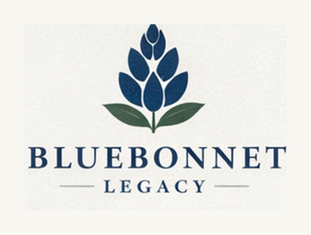
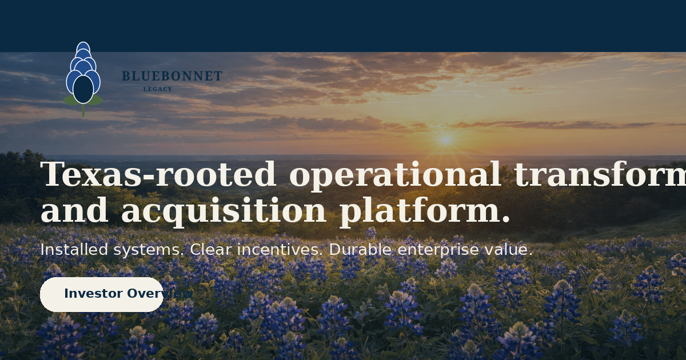

Financial Clarity
Real-time KPI dashboards, unit economics, margin visibility, cash forecasting, and board-ready reporting.

DiagnosticTexas-rooted operating discipline
Bluebonnet installs the financial clarity, operating structure, and incentive alignment legacy firms need to scale, transition, or transact.
The Bluebonnet Alignment Framework
Real-time KPI dashboards, unit economics, margin visibility, cash forecasting, and board-ready reporting.
Role clarity, SOP mapping, decision rights, leadership cadence, and disciplined process ownership.
Comp design, performance metrics, accountability loops, and long-term ownership logic.
What Bluebonnet does
Rapid audit of KPIs, reporting, org design, founder dependence, and operating friction.
Install dashboards, accountability cadence, process documentation, and practical automation.
Partner through value creation with minority, majority, or acquisition-linked structures.
Investor-ready positioning
Bluebonnet targets businesses where value is trapped by weak reporting, founder dependence, unclear process ownership, and misaligned incentives. The work begins with advisory discipline and compounds into selective equity participation where fit and economics are excellent.
Thousands of regional operators face succession, margin pressure, labor constraints, and digital underinvestment.
Operator-first model combining advisory cash flow, rigorous systems, and selective equity upside.
Shared systems, disciplined cadence, and clearer incentives lift valuation and resilience.
Public narrative
The homepage, diagnostic, and investor materials present one consistent story: installed systems, clear incentives, and durable enterprise value.

Begin with a diagnostic
Bluebonnet starts with a concise operating assessment and value-creation roadmap built for owners, boards, and investors.
Request Overview